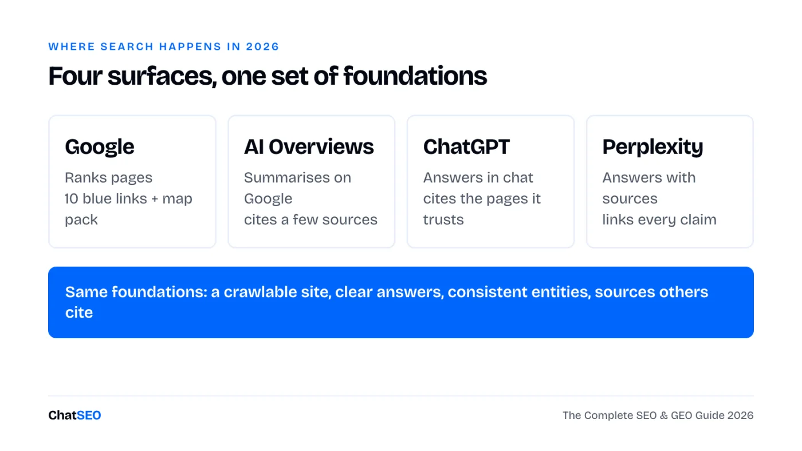
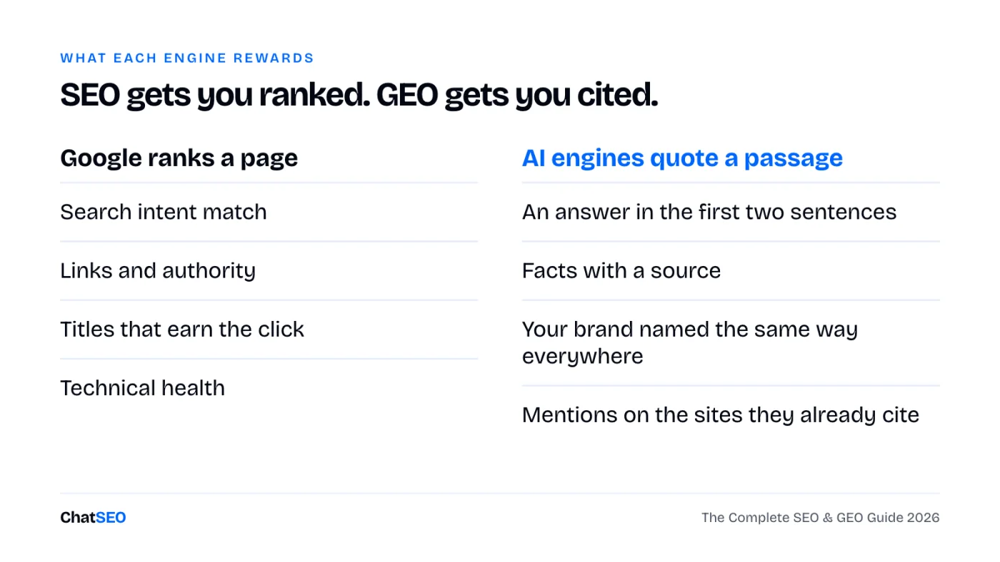
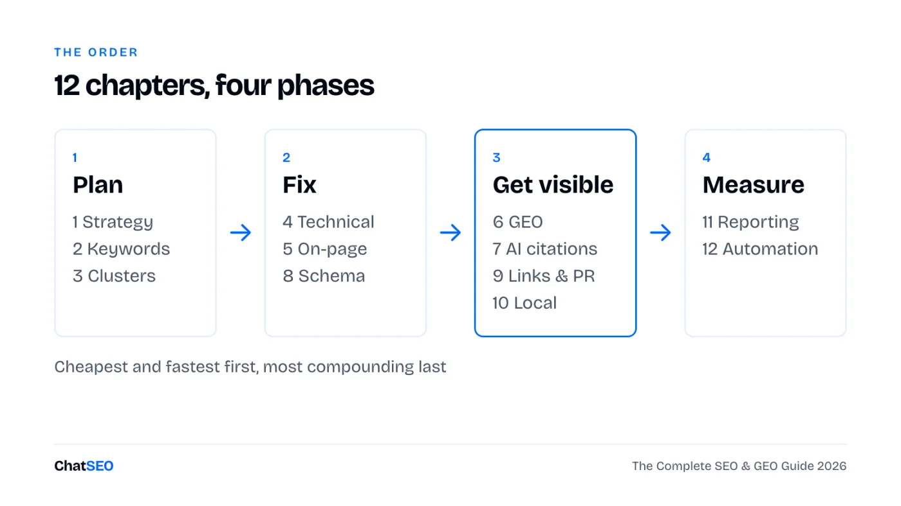

Search now happens on Google, ChatGPT, Perplexity and AI Overviews. Twelve chapters, from strategy to automation. Each one gives you what matters in 2026, a short checklist and the ChatSEO prompt that does the work on your own data.
ChatSEO, the AI SEO agent connected to your Search Console · 🎁 7 days free
People still search on Google. They also ask ChatGPT, Perplexity and the AI Overview at the top of the results. Each one picks a few sources and ignores the rest.

The good news: the foundations are the same everywhere. A site Google can crawl, pages that answer the question in the first lines, a brand named the same way everywhere, and mentions on the sites these engines already trust. SEO gets you ranked. GEO (generative engine optimisation) gets you quoted. You need both.


Only have an hour? Do chapters 1, 5 and 11. They use the traffic you already have.
Most SEO fails before the first keyword: no goal, no baseline, so no way to know if anything worked. Start from a business goal, then pick the pages that serve it.
Build my SEO baseline for [site URL], dated today, from Search Console (last 28 days, compared with the 28 days before): total clicks, impressions and average position, split brand and non-brand queries, and the 10 pages that bring the most non-brand clicks. Then propose one quarterly SEO goal tied to [business goal: leads / sales / sign-ups]. Only use numbers from the data. If one is missing, say so.
A keyword is only worth targeting if the page type matches what Google already shows. A "best X" query wants a comparison, a "X near me" query wants a local page, a "how to" query wants a guide.
From my Search Console queries (last 3 months) and keyword data for [topic], list the 20 keywords with the best mix of volume and fit for [site URL]. For each: monthly volume, my current position if any, search intent (learn, compare, buy, local), and the page type the top 5 results use. Give me one table, sorted by opportunity. Do not invent volumes.
Google and AI engines trust sites that cover a topic completely, not sites with one great article. A cluster is one pillar page and the supporting pages that link to it.
Map a content cluster for [topic] on [site URL]: one pillar page and up to 12 supporting pages. For each page: the target keyword, its search intent, whether a page already exists on my site (give the URL) or needs to be created. Order the missing pages by the traffic they could bring, using real keyword data only.
You don't need a 200-line audit. You need the handful of issues that stop your important pages from being crawled, indexed or loaded fast.
Run a technical SEO check on [site URL]: indexing, sitemap, robots.txt (including AI crawlers), redirects, broken internal links and page speed on my top 10 pages by clicks. Return only the issues that affect pages bringing traffic, ranked by impact, with the fix for each. Do not list issues you cannot confirm from the crawl or Search Console.
The fastest wins sit on pages that already rank in positions 4 to 20. A better title, a clearer first paragraph and two internal links can move them without writing a new page.
Find the pages on [site URL] ranking in positions 4 to 20 with a click-through rate below what their position should get (Search Console, last 3 months). For the top 10: rewrite the title and meta description, and suggest 2 internal links from my strongest pages. Show current vs proposed side by side. Wait for my approval before changing anything on the site.
Before optimising for AI engines, find out where you stand. Ask the questions your customers ask, and see who gets named.
Check my AI search visibility for [brand] in [category / city]. Write the 10 questions a buyer would ask an AI assistant, then report for each: whether my brand is mentioned, which competitors are, and which pages or sites are cited as sources. End with the 5 sources cited most often. Only report what the results show.
Why a checklist isn't enough. This page gives you the method and the prompts. It can't read your Search Console, crawl your site or check this week whether ChatGPT names you. ChatSEO does, on your real data, and pushes the approved fixes to WordPress or Shopify. The first 7 days are free.
AI engines quote passages, not pages. The passage that gets quoted is short, answers the question directly and states facts they can trust.
Rewrite [page URL] so AI engines can quote it: turn the main headings into the questions people ask, put a direct 1 to 2 sentence answer under each, and flag every claim that needs a source. Keep my facts and my tone. Do not add numbers that are not on the page. Show me the new version before publishing.
Schema tells search engines what a page is: a product, a local business, an article, an FAQ. It won't rank a bad page, but it makes a good one easier to understand and to show richly.
Check the structured data on [page URL]. Tell me which schema types it has, which it should have for its page type, and write the missing JSON-LD using only information visible on the page. Leave a placeholder where a value is missing instead of guessing it.
Links still matter for Google, and mentions matter for AI engines. The best prospects already link to or mention your competitors.
Find link prospects for [site URL] against [competitor 1] and [competitor 2]: the sites that link to at least one of them and not to me, from real backlink data. Keep the 20 most relevant to [topic], drop spam and link sellers, and give me the linking page and a one-line outreach angle for each.
If you serve a city, the map pack and your Google Business Profile often matter more than your website. The full method is in the Local SEO Playbook; here are the essentials.
Audit my local SEO for [business name] in [city]: my Google Business Profile category, my position in the local pack for [main service] + [city], the consistency of my name, address and phone across directories, and whether I have a page per service and city. Rank the fixes by expected impact. Say "not found" where you cannot check something.
A report is useful when it ends with a decision. Four numbers, what changed, and what you'll do next month.
Write my monthly SEO report for [site URL] from Search Console and GA4: non-brand clicks and impressions vs last month, the 5 pages that gained and the 5 that lost the most (with the queries behind the change), organic conversions, and 3 actions for next month in order. Keep it to one page. Use only numbers from the data.
Automate the reading and the drafting. Keep the decisions and the final check. A weekly routine beats a yearly audit.
Give me this week's SEO action list for [site URL]: compare last week with the week before in Search Console, spot the pages and queries that moved, and list the 3 actions most likely to bring clicks this week, each with the page, the change and why. Do not include anything the data does not support.
Connect Search Console once. Then paste the prompts above, one chapter at a time, and approve what ChatSEO proposes. 7 days free, cancel anytime.
Start your 7-day free trial →